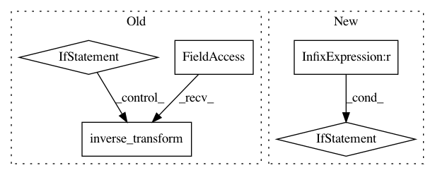

da729dab14194dba84e75571f08f927efbc19865,yellowbrick/classifier/confusion_matrix.py,ConfusionMatrix,score,#ConfusionMatrix#Any#Any#,159
Before Change
y_pred = self.predict(X)
// Encode the target with the supplied label encoder
if self.label_encoder:
try:
y = self.label_encoder.inverse_transform(y)
y_pred = self.label_encoder.inverse_transform(y_pred)
except AttributeError:
// if a mapping is passed to class apply it here.
y = np.array([self.label_encoder[x] for x in y])
y_pred = np.array([self.label_encoder[x] for x in y_pred])
// Compute the confusion matrix and class counts
self.confusion_matrix_ = confusion_matrix_metric(
y, y_pred, labels=self.classes_, sample_weight=self.sample_weight
)
self.class_counts_ = self.class_counts(y)
After Change
y = self._decode_labels(y)
y_pred = self._decode_labels(y_pred)
labels = self._labels()
if labels is None:
labels = self.classes_
// Compute the confusion matrix and class counts
self.confusion_matrix_ = confusion_matrix_metric(
y, y_pred, labels=labels, sample_weight=self.sample_weight
)
self.class_counts_ = dict(zip(*np.unique(y, return_counts=True)))
In pattern: SUPERPATTERN
Frequency: 3
Non-data size: 5
Instances
Project Name: DistrictDataLabs/yellowbrick
Commit Name: da729dab14194dba84e75571f08f927efbc19865
Time: 2019-08-22
Author: benjamin@bengfort.com
File Name: yellowbrick/classifier/confusion_matrix.py
Class Name: ConfusionMatrix
Method Name: score
Project Name: IndicoDataSolutions/finetune
Commit Name: 71aa691cf688aac999596c594be8b6c295cd44bf
Time: 2019-06-12
Author: madison@indico.io
File Name: finetune/input_pipeline.py
Class Name: BasePipeline
Method Name: _dataset_with_targets
Project Name: rtavenar/tslearn
Commit Name: 85aabb5014e22659ac722280607a1f4b44e1fb32
Time: 2020-05-03
Author: romain.tavenard@univ-rennes2.fr
File Name: tslearn/shapelets.py
Class Name: ShapeletModel
Method Name: predict